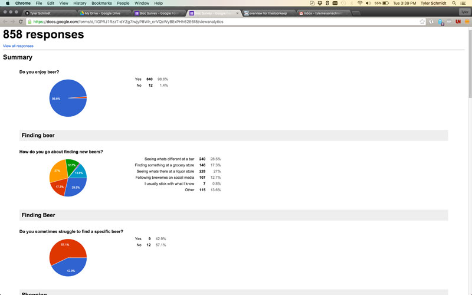
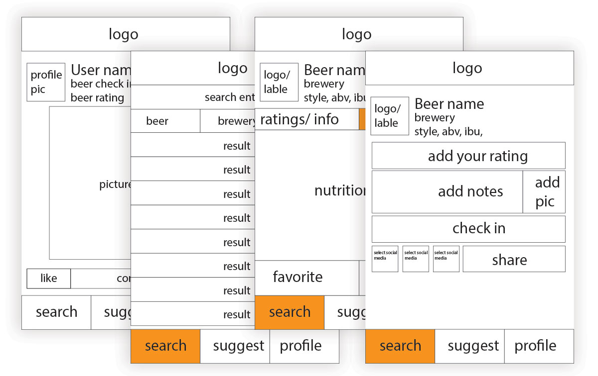
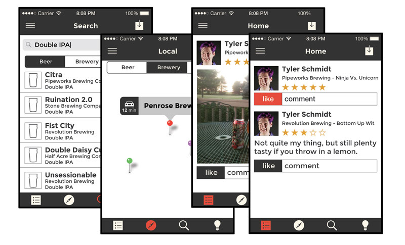
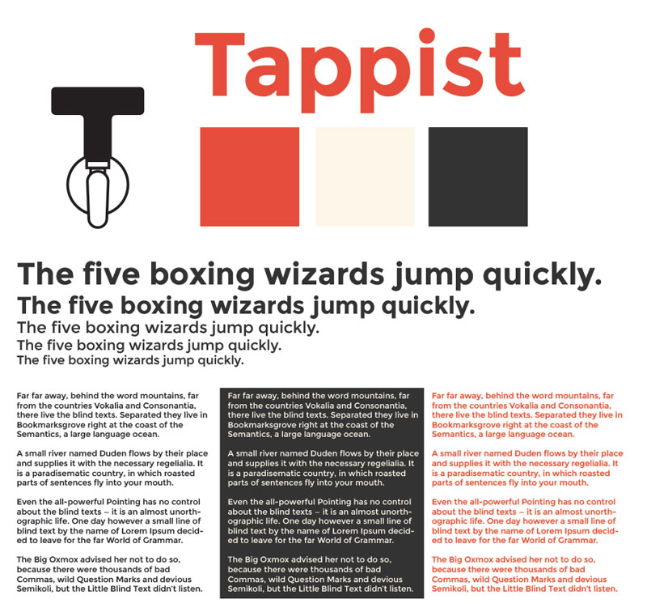
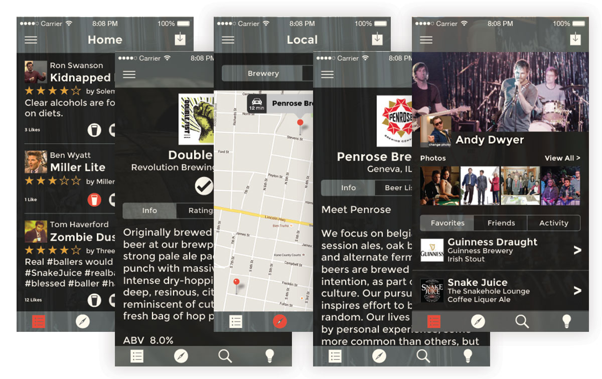

For this project, I wanted to incorporate my love of all things craft beer. I wanted to create a place where people could learn about beer, find beer, and talk about beer with their friends. As we almost always have our phones with us, an app was the clear solution for my problem.
Craft beer is a seemingly daunting product to newer consumers. While it's just beer to some, the culture and the learning curve can be a real deterrent to new consumers. My goal was to find the largest issues users felt as a craft beer consumer and address them.
The first part of understanding this project was to gather some user research. To start, I created a survey. The main things I was looking for were the type of beer consumer the users were and how they used similar applications. I gathered over 800 responses from the survey. This was incredibly helpful as the entire goal of the project was determined based on the results. From that data I was able to generate some user personas to categorize common users. From those personas, I generated user stories and user flows to determine all the features the app needed to include. From this, I determined that a generalized app with more of a focus on education, community, and suggestion would be more effective than a beer finding app.
From my user flows, I determined all the features necessary for the app, and from that created low fidelity wireframes. While primitive, these were incredibly influential on every following step of the design process. From these early wireframes, I translated them into higher fidelity wireframes.
At this time I wanted to establish the branding for the app. This included determining the name, color palette, typeface, and logo. After choosing my typeface I created a type specimen, which in turn helped inform my color palette. The naming process didn't take me much time as I wanted an approachable and fun name that also referenced the product of beer. From the name I quickly came to a logo through some sketching pen, paper, as well as illustrator.
Upon establishing the brand identity, I began to apply the brand styling to the wireframes.From these fleshed out wireframes, I was able to develop a working prototype on Invision. To determine the usablility of this prototype, I sent it out to several users to determine how effective the app was. The main thing I was looking for was an intuitive nature to the design and ease of navigation.
This project was my first time wading into mobile design, and I learned a great deal, not only of the possibilities it gives you, but the contraints as well. Using a detailed process is incredibly beneficial to such a project, as each step helps inform what you have worked on and what you will work on. I strongly enjoyed working on this, and would even consider developing it one day.